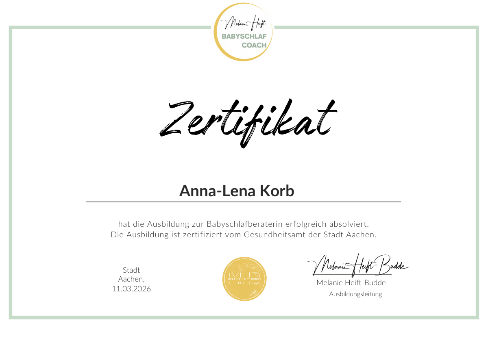

Ruhigere Nächte.
Mit Nähe und einem klaren Plan.
Persönliche Schlafberatung für Familien mit Babys und Kleinkindern. Ohne Schreienlassen, online in ganz Deutschland.
Babyschlafberatung online in ganz Deutschland – mit Nähe statt Schreienlassen
Wenn das Einschlafen den ganzen Abend bestimmt und die Nächte zerstückelt sind, braucht ihr nicht noch mehr gut gemeinte Tipps. Ihr braucht jemanden, der zuhört, ehrlich hinschaut und euch Schritt für Schritt begleitet.
Ich bin Anna-Lena Korb, zertifizierte Babyschlafberaterin und seit 2010 Tagesmutter. Ich begleite Familien mit Kindern von 0 bis 6 Jahren: bei langen Einschlafabenden, häufigem nächtlichen Aufwachen, beim Tagschlaf oder wenn das Einschlafen nur mit einer Person klappt.
Die Beratung läuft deutschlandweit online per Zoom oder Telefon, egal ob ihr in Hamburg, Berlin, Köln, München oder auf dem Land wohnt. Im Raum Würzburg sind auch persönliche Termine möglich. Das erste Gespräch ist kostenlos und unverbindlich.

Meine Schlafberatung im Überblick
Jedes Alter braucht etwas anderes. Wählt aus, was zu eurer Familie passt.


Wenn Schlaf alles andere bestimmt
Ihr seid müde. Und vielleicht auch müde von widersprüchlichen Ratschlägen.
Der Abend zieht sich über Stunden. Die Nächte sind zerstückelt. Einschlafen klappt nur mit Mama oder nur mit Papa. Oder Kita-Start, Tagschlaf und ein neuer Alltag bringen alles durcheinander.
Wir schauen gemeinsam auf eure Situation, ohne Schuldzuweisungen und ohne ein Programm für alle. Bei Neugeborenen stehen Orientierung und sichere Schlafbedingungen im Mittelpunkt.
Was ihr bei mir bekommt und was es bei mir bewusst nicht gibt, lest ihr auf der Seite zur Schlafberatung.
Meine ArbeitsweiseSo läuft die Schlafberatung ab
Ein persönlicher Weg statt einer Sammlung weiterer Schlaftipps. Ihr wisst jederzeit, was als Nächstes kommt.
Kennenlernen
Ein kostenloses Gespräch von 20 Minuten, in dem ihr erzählt, was euch gerade belastet.
Verstehen
Mit Fragebogen und Beratungsgespräch verschaffen wir uns ein genaues Bild von eurem Alltag.
Plan
Ihr bekommt konkrete nächste Schritte, schriftlich und passend zum Alter eures Kindes.
Begleitung
Ich bleibe in der gebuchten Zeit ansprechbar, und wir passen den Plan gemeinsam an.

Beratung bei euch zu Hause, wo immer ihr wohnt
Die Gespräche laufen per Zoom oder Telefon. Ihr bleibt in eurer gewohnten Umgebung, beide Elternteile können dabei sein, auch von zwei Orten aus. Kein Packen, keine Anfahrt mit müdem Baby.
Zwischen den Terminen könnt ihr eure Fragen im gebuchten Zeitraum per WhatsApp stellen. Ich antworte in der Regel innerhalb von 24 Stunden.
Klare Gesamtpreise, ohne Abo
Das Kennenlernen ist kostenlos. Danach entscheidet ihr euch in Ruhe für eine einzelne Sprechstunde oder eine Begleitung über mehrere Wochen. Ohne automatische Verlängerung.
Alle Leistungen und Pakete| Angebot | Leistung | Preis |
|---|---|---|
| Kennenlernen | 20 Minuten per Zoom oder Telefon | kostenlos |
| Schlafsprechstunde | 45 Minuten für ein konkretes Thema mit kurzer schriftlicher Zusammenfassung | 89 € |
| Basis | 60 Minuten Beratung, schriftlicher Plan und 7 Tage Begleitung | 149 € |
| Intensiv | 60 Minuten Beratung, Plan, 3 Folgegespräche und 3 Wochen Begleitung | 299 € |
| Premium | 60 Minuten Beratung, Plan, 5 Folgegespräche und 6 Wochen Begleitung | 479 € |
„Nähe ist kein Fehler. Ihr dürft euch trotzdem ruhigere Abende wünschen.“
Ich bin Anna-Lena, herzlich, ehrlich und nah am Alltag
Seit 2010 begleite ich als qualifizierte Kindertagespflegeperson Babys und Kleinkinder. Rund 100 Kinder habe ich in dieser Zeit beim Ankommen, Wachsen und Zur-Ruhe-Kommen erlebt. Als Mutter kenne ich lange Einschlafabende auch selbst.
Heute verbinde ich diese Erfahrung mit meiner Ausbildung zur Babyschlafberaterin. Ihr bekommt von mir klare Worte, einen konkreten Plan und Unterstützung bei der Umsetzung.
Ratgeber für müde Eltern
Eigenständig geschrieben, mit Verweisen auf verlässliche Quellen. Kein Ersatz für eine Beratung, aber ein guter Anfang.


Häufige Fragen zur Schlafberatung
Unsicherheit gehört dazu. Hier findet ihr erste Antworten.
Alle Fragen und AntwortenFür welche Familien ist die Babyschlafberatung gedacht?
Für Eltern von Babys und Kindern bis sechs Jahre, die sich ruhigere Abende oder Nächte wünschen und dabei keinen Weg über Schreienlassen gehen möchten. Ob Neugeborenes, Baby im ersten Jahr oder Kindergartenkind: Ziele und Tempo richten sich nach eurem Kind und eurem Alltag.
Wie läuft die Beratung online ab?
Nach dem kostenlosen Kennenlernen bekommt ihr je nach Paket einen Fragebogen und bei Intensiv und Premium ein Schlafprotokoll. Das Beratungsgespräch findet per Zoom oder Telefon statt, danach erhaltet ihr euren schriftlichen Plan. Alle Schritte im Detail findet ihr unter Ablauf.
Was unterscheidet deine Beratung von Schlafprogrammen?
Bei mir gibt es kein festes Programm, das für alle Kinder gleich abläuft. Wir schauen auf euer Kind, euren Tagesablauf und darauf, was ihr verändern möchtet. Daraus entsteht ein Plan in kleinen Schritten, den ihr mit Nähe und Trost umsetzen könnt.
Wie schnell ist ein Termin möglich?
Für das Kennenlernen braucht es mindestens sieben Tage Vorlauf. Weil ich höchstens drei Familien gleichzeitig begleite, klären wir im Gespräch, wann eure Beratung starten kann.
Kostenloses Kennenlernen vereinbaren
Erzählt mir, was eure Nächte gerade schwer macht. In 20 kostenlosen Minuten schauen wir gemeinsam, ob und wie ich euch begleiten kann, per Zoom oder Telefon, wo immer ihr in Deutschland wohnt.
- Telefon0173 2584141
- E-Mailbabyschlafcoach.annalena@gmail.com
- GesprächszeitenMo–Fr 17–19 Uhr, Sa 9–13 Uhr
- StandortEisingen bei Würzburg, online in ganz Deutschland